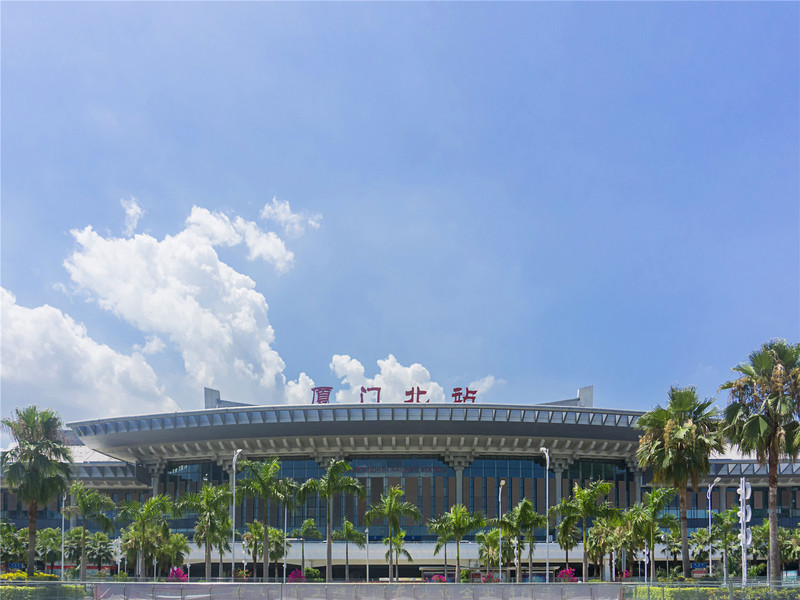

厦门城在海上，海在城中，四季如春，白露环绕。在祖国的东南沿海线上有一颗闪耀的"明星"，坐立于东经118°04'04〃，北纬24°26'46〃，它就是享有"海上花园"之称的厦门。
这里小编贴心奉上厦门站、厦门北站至景点的公共交通指南↓↓
| 车站 | 厦门站 | |||||||
| 景点 | 路程 | 出站口方向 | 接驳车次 | 到站名 | 开行时间 | 平均间隔时间 | 运行时长 | 票价 |
| 厦门大学 | 8公里 | 南广场 | 1路 | 厦大（南普陀）站 | 5:50-01:00 | 5分钟 | 30分钟 | 1元 |
| 北广场 | 21路 | 厦大（南普陀）站 | 6:30-22:10 | 5分钟 | 30分钟 | 1元 | ||
| 北广场 | 659路 | 厦大西村站 | 5:25-20:50 | 10分钟 | 30分钟 | 1元 | ||
| 邮轮码头 （鼓浪屿） |
7.7公里 | 北广场 | 842路 转 87路 |
东渡狐尾山站 - 邮轮中心码头站 |
6:30-22:30 6:20-22:00 |
10分钟 | 30分钟 | 1元 - 1元 |
| 北广场 | 858路 转 87路 |
东渡狐尾山站 - 邮轮中心码头站 |
6:35-22:10 6:20-22:00 |
10分钟 | 30分钟 | 1元 - 1元 |
||
| 北广场 | 958路 转 51路 |
东渡狐尾山站 - 邮轮中心码头站 |
6:25-21:30 6:45-19:30 |
10分钟 | 30分钟 | 1元 - 1元 |
||
| 南广场 | 854路 转 943路 |
岳阳小区站 - 邮轮中心码头站 |
6:20-22:00 7:30-23:30 |
10分钟 | 30分钟 | 1元 - 1元 |
||
| 集美学村 | 14公里 | 北广场 | 952路 转 地铁1号线 |
高崎站 - 集美学村站 |
6:30-22:30 6:30-22:29 |
10分钟 | 40分钟 | 1元 - 1元 |
| 曾厝垵 | 8.4公里 | 南广场 | 公交专线B2路 | 曾厝垵站 | 8:30-21:00 | 10分钟 | 15分钟 | 5元 |
| 北广场 | 48路 | 曾厝垵站 | 6:35-22:30 | 10分钟 | 40分钟 | 1元 | ||
| 北广场 | J102路 | 曾厝垵李氏宗祠站 | 9:30-19:00 | 20分钟 | 20分钟 | 3元 | ||
| 高崎机场 | 10公里 | 北广场 | BRT快1路 | T4候机楼/高崎机场站 | 5:45-22:15 | 5分钟 | 20分钟 | 2元 |
| 北广场 | BRT快2路 | T4候机楼/高崎机场站 | 6:10-21:15 | 5分钟 | 20分钟 | 2元 | ||
| 北广场 | 650路 | T4候机楼站 | 6:30-21:45 | 10分钟 | 30分钟 | 2元 | ||
| 北广场 | 940路 | T4候机楼站 | 7:05-19:30 | 15分钟 | 40分钟 | 1元 | ||

| 车站 | 厦门北站 | |||||||
| 景点 | 路程 | 出站口方向 | 接驳车次 | 到站名 | 开行时间 | 平均间隔时间 | 运行时长 | 票价 |
| 厦门大学 | 35公里 | 南广场 | BRT快1路 转 309路 |
二市站 - 厦大（南普陀）站 |
6:10-23:30 6:40-18:00 |
5分钟 | 60分钟 | 3元 - 1元 |
| 北广场 | 地铁1号线 转 1路 |
镇海路站 - 厦大（南普陀）站 |
6:30-22:30 5:50-01:00 |
5分钟 | 60分钟 | 7元 - 1元 |
||
| 北广场 | 地铁1号线 转 87路 |
中山公园站 - 厦大西村站 |
6:30-22:30 6:00-22:00 |
5分钟 | 60分钟 | 7元 - 1元 |
||
| 邮轮码头 （鼓浪屿） |
22公里 | 北广场 | 943路 | 邮轮中心码头站 | 7:30-23:30 | 20分钟 | 80分钟 | 1元 |
| 北广场 | 地铁1号线 转 2号线 |
吕厝站 - 邮轮中心站 |
6:30-22:30 6:30-22:30 |
5分钟 | 60分钟 | 6元 | ||
| 北广场 | 地铁1号线 转 943路 |
官任站 - 邮轮中心码头站 |
6:30-22:30 7:30-23:30 |
5分钟 | 60分钟 | 3元 - 1元 |
||
| 南广场 | BRT快1路 转 51路 |
斗西路站 - 邮轮中心码头站 |
6:10-23:30 6:45-19:30 |
5分钟 | 60分钟 | 3元 - 1元 |
||
| 集美学村 | 9.9公里 | 北广场 | 地铁1号线 | 集美学村站 | 6:30-22:30 | 5分钟 | 20分钟 | 5元 |
| 南广场 | 953路 | 集美学村站 | 5:50-23:30 | 10分钟 | 20分钟 | 2元 | ||
| 曾厝垵 | 33公里 | 南广场 | BRT快1路 转 47路 |
东芳山庄站 - 曾厝垵站 |
6:10-23:30 6:20-21:40 |
5分钟 | 70分钟 | 3元 - 1元 |
| 北广场 | 地铁1号线 转 48路 |
镇海路站 - 曾厝垵站 |
6:30-22:30 6:35-22:30 |
5分钟 | 70分钟 | 7元 - 1元 |
||
| 北广场 | 地铁1号线 转 29路 |
镇海路站 - 曾厝垵站 |
6:30-22:30 6:40-23:40 |
5分钟 | 70分钟 | 7元 - 1元 |
||
| 高崎机场 | 17公里 | 南广场 | BRT快1路 | T4候机楼/高崎机场站 | 6:10-23:30 | 5分钟 | 30分钟 | 2元 |
| 南广场 | BRT快6路 | T4候机楼/高崎机场站 | 6:10-21:15 | 5分钟 | 30分钟 | 2元 | ||
| 南广场 | 空港快线 | 厦门高崎机场 | 8:30-20:30 | 20分钟 | 30分钟 | 15元 | ||
厦门大学
厦门大学是厦门的最高学府，同时也是全国最美的大学之一，以其浓厚的文学氛围和美景，吸引着全国各地游客慕名前来参观~
【地址】：思明区思明南路422号
【交通】：厦大西村、厦大南门站
南普陀寺
厦门八大风景区之一，也是一个不可错过的佛教圣地。周末或者空闲的时间可以来这里感受下佛教文化的洗礼。
【地址】：思明区思明南路515号
【交通】：厦大(南普陀)站、厦大西村站
演武大桥观景平台
演武大桥据说是世界上离海平面最近的桥梁之一，而观景平台在演武大桥外侧的下边。观景平台总面积逾一万平方米，视野相当开阔，轮渡、海沧、鼓浪屿及漳州港之景尽收眼底。
【地址】：思明区演武路
【交通】：中华儿女美术馆站、厦大西村站、厦大医院站
鼓浪屿
被冠以世界文化遗产的鼓浪屿素有“海上花园”之誉，岛上气候宜人，风光秀丽。岛内完好地保存了大量中外风格各异的建筑物，被誉为“万国建筑博览”，又因小岛音乐人才辈出，也被称为“钢琴之岛、音乐之乡”。岛上主要景点有日光岩、菽庄花园、皓月园，海底世界、毓园、环岛路、鼓浪石、天然海滨浴场等。
【地址】：厦门市思明区鼓浪屿
【交通】：邮轮中心厦鼓码头
曾厝垵
这是坐落在环岛路旁的一个小渔村。这里的建筑风格蔚然成风，多姿多彩的装修，竟成了曾厝垵独特的标记，被驴友誉为全国最文艺的渔村，好像宫崎骏动画中那些世界的夹缝。位于厦门最美的环岛路上，在那个与众不同的车站，在两座房子中间，透出一片海景。也好像这个村子，在城市与现代之间，留下的一份田园。
【地址】：思明区龙虎西路附近
【交通】：曾厝垵站、曾厝垵李氏宗祠站
沙坡尾
这一名称来源是因为这是一大段沙滩的最末端，而且各处的沙子都会流到这里来。但这不影响其成为厦门的一个文艺小地标，悠闲的午后可以来这感受来自老厦门的魅力。
【地址】：思明区大学路(演武大桥附近)
【交通】：厦门大学或厦大西村站下，往厦大医院方向行走
环岛路
环岛路是厦门环海风景旅游干道之一，途径轮渡、厦大白城、胡里山炮台、椰风寨、国际会展中心、观音山、五缘湾等主要景点，大海、沙滩、彩色路面、青草、绿树，构成了一条美丽的海滨走廊。漫步其上，一边领略蓝天碧海的壮美，一边浏览小岛的自然景色，令人心旷神怡。
【地址】：厦门市思明区环岛路
【交通】：曾厝垵站、塔头站、黄厝站
中山路
中山路步行街，厦门最老牌的商业街，是很多人来厦门必打卡的地方。清一色的骑楼建筑，以粉红和乳白作为主色调，有着浓郁的南洋风情。
【地址】：思明区中山路(近厦门轮渡码头)
【交通】：镇海路站
集美学村
集美学村是传统的闽南建筑，听说是中国最美的学村。白天看“嘉庚风格”的龙脊凤檐、雕梁画栋，傍晚坐在岸边吹海风捡贝壳螃蟹，好不惬意。
【地址】：集美区嘉庚路
【交通】：龙舟池站、集美学村站
空闲的时候，带上亲朋好友乘火车来厦门散散心吧~~~

 330445074@qq.com
330445074@qq.com